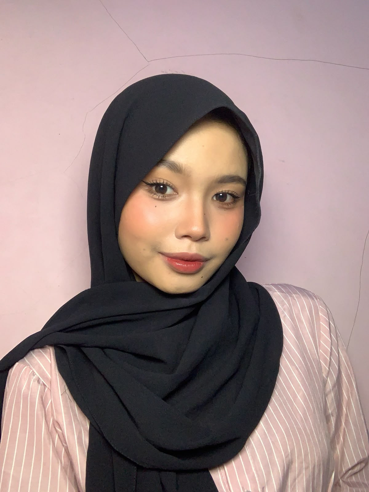

Actuarial Science student at President University, interested in data analysis, statistical modeling, and risk quantification.
About
Actuarial Science student at President University with a focus on statistical modeling and data analysis. Experienced in time series forecasting using ARIMA, achieving MAPE of 4.6% on rice price prediction using BPS data. Skilled in R programming, financial mathematics, and quantitative analysis. Currently seeking internship opportunities in Data Analysis, Risk Analysis, or Actuarial roles for August 2026.
Projects
Rice Price Forecasting — ARIMA Model
Built an ARIMA(1,2,1) model to forecast national rice prices using BPS data (2019–2023). Applied Box-Jenkins methodology with seasonal differencing. Achieved MAPE of 4.6% (premium) and 5.5% (medium grade).
Olist E-Commerce Analytics Dashboard
Loaded 9 CSV tables into MariaDB and wrote SQL queries covering sales trends, delivery performance, and customer satisfaction. Built a 3-page Power BI dashboard connected via MariaDB native connector.
Nestlé Financial Statement Analysis
Performed ratio analysis and peer comparison of Nestlé against Unilever and Danone using publicly available financial statements. Covered liquidity, profitability, and leverage ratios.
AI Literacy Outreach to High Schools
Led a social project introducing AI chatbot tools to high school students, covering practical applications and responsible usage. Designed session materials and facilitated hands-on workshops.
Sunscreen Product Business Plan
Developed a business plan for a sunscreen product including market analysis, cost structure, pricing strategy, and financial projections as part of a university entrepreneurship project.
Skills
Programming & Tools
Analytics & BI
Statistical Methods
Soft Skills
Education
Bachelor of Actuarial Science
President University
Organizational Experience
Public Relation
PUMA Information Systems
Feb 2026 – Present
Conducted outreach to recruit media partners for TechSprint 2026, a competition covering UI/UX Design, Data Automation, and System Analysis. Successfully secured 7 media partners from local high schools.
Public Relation
PUMA Actuarial Science
Aug 2025 – Sep 2025
Served as Master of Ceremony and managed broadcast operations for two departmental orientation events. Collaborated with the PR team to deliver a welcoming introduction to the major for incoming students.
Public Relation — PUSH CUP 2025
President University
May 2025 – Jun 2025
Assisted the PR team for a dormitory-based multi-sport competition. Stepped in to handle sponsorship coordination for 2 sponsors, ensuring commitments were fulfilled on the day of the event.
Event Organizer
Investment Club President University
Apr 2025 – May 2025
Contributed to planning and execution of a seminar event. Responsible for building the event rundown and managing timekeeping on the day to ensure all sessions ran on schedule.